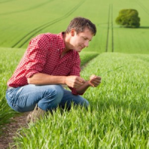

Asesoría Agrícola
En AgroServi brindamos todo tipo de servicios relacionados con el mundo agrícola, desde la asesoría hasta servicios de recolección, siembra, alquiler de maquinaria o fruticultura. Además contamos con un personal especializado todo tipo de tareas y actividades agrículas que supervisan y estudian los proyectos. Consúltanos ante cualquier duda ya que siempre nos adaptamos a tus necesidades.
Los mejores productos del sector
A precios muy competitivos
Asesoría técnica y seguimiento de producción
Desde AgroServi estudiamos los ratios, costes y productividad de cada campo en el que trabajamos. Además, te asesoramos sobre las mejores variedades a cultivar. Buscamos el máximo rendimiento de sus cosechas.
Servicios de gestión administrativa
Manténte informado de toda la actualidad en legislación agrícola, subvenciones, contratos. En AgroServi contamos con un departamento especializado en la gestión administrativa. Asimismo, nos encargamos de la preparación y presentación de las solicitudes PAC y seguros agrarios.
Servicio integral de gestión de fincas
Desde la siembra hasta la recolecta, refrigeración y conservación. Nos encargamos de todo el ciclo de cultivo del campo.
Todo un equipo profesional a tu servicio
